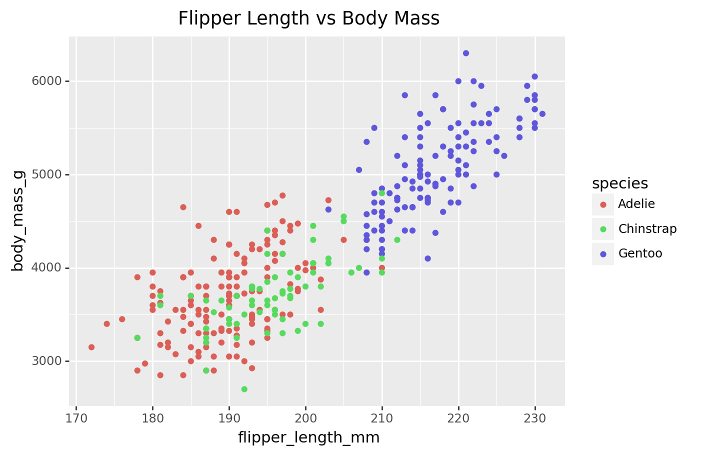
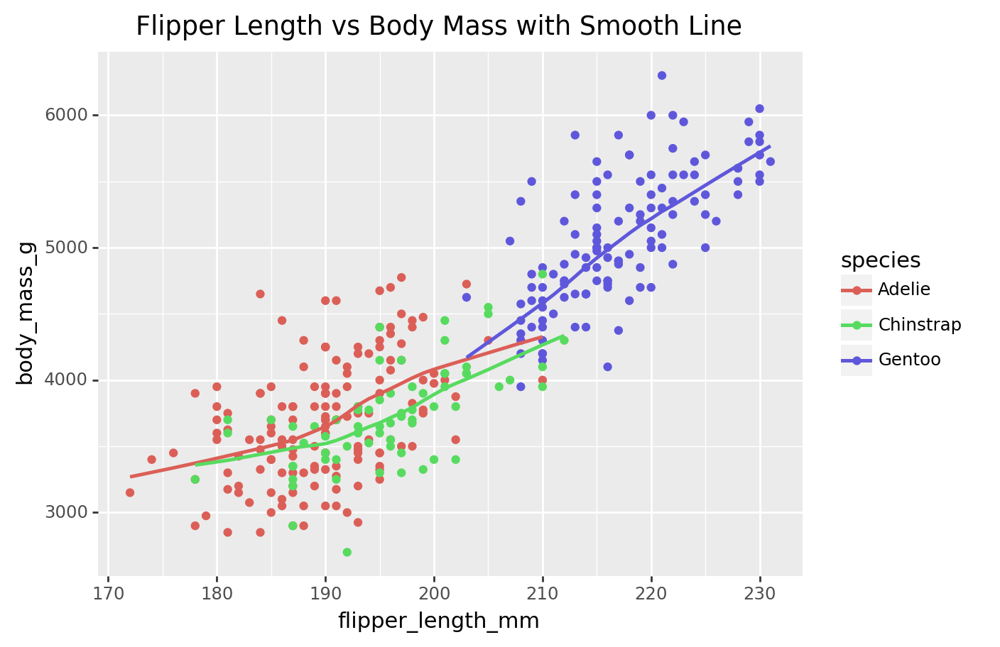
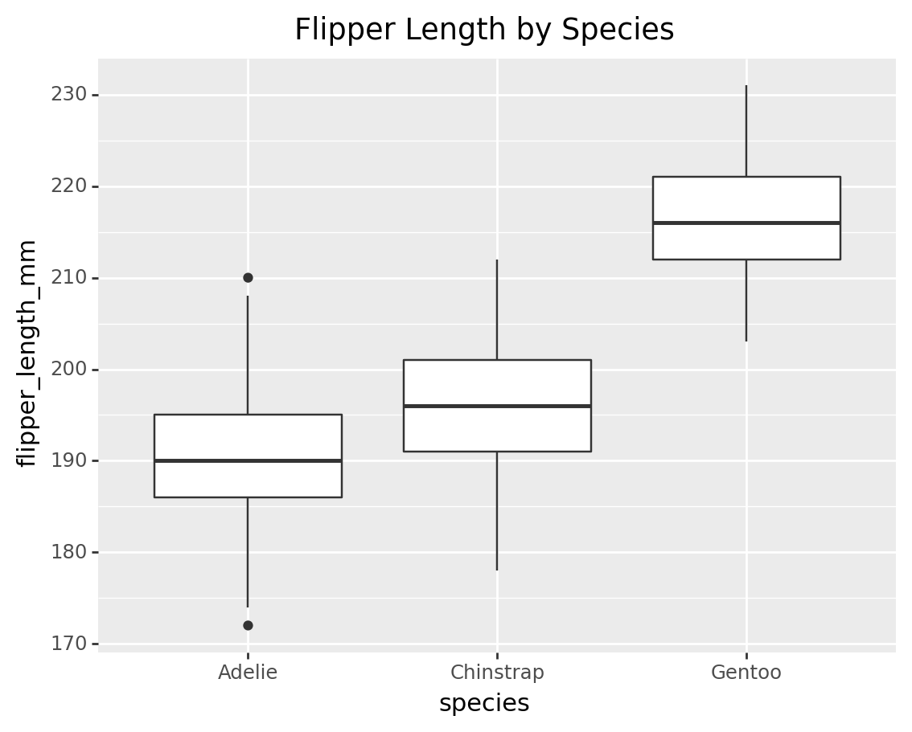
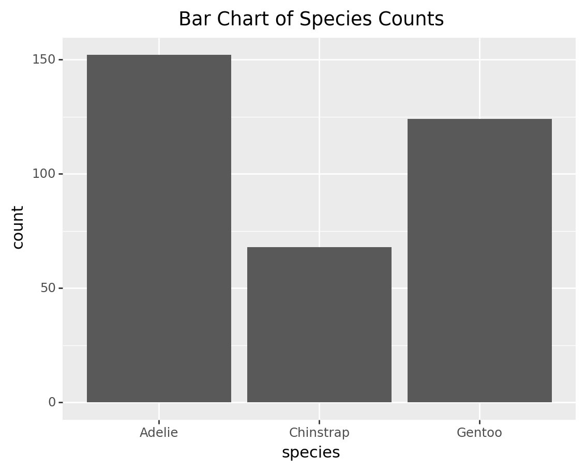
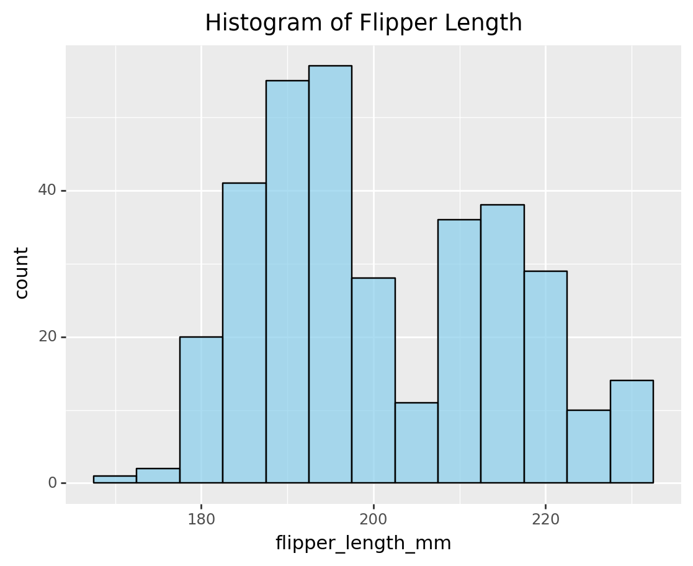
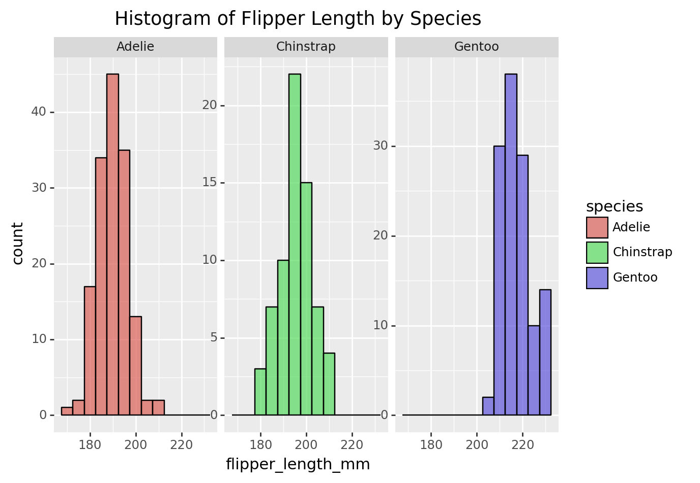
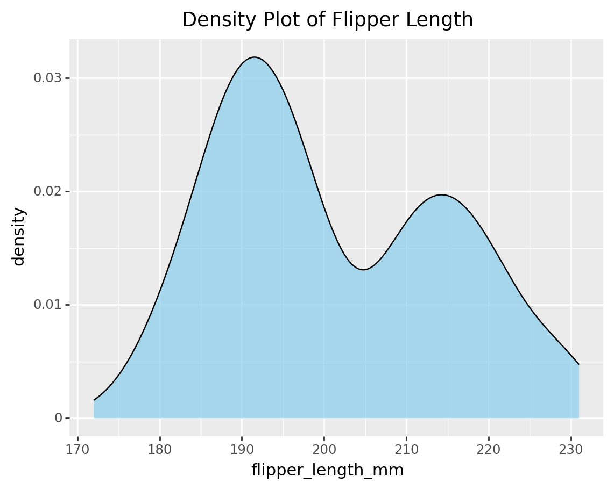
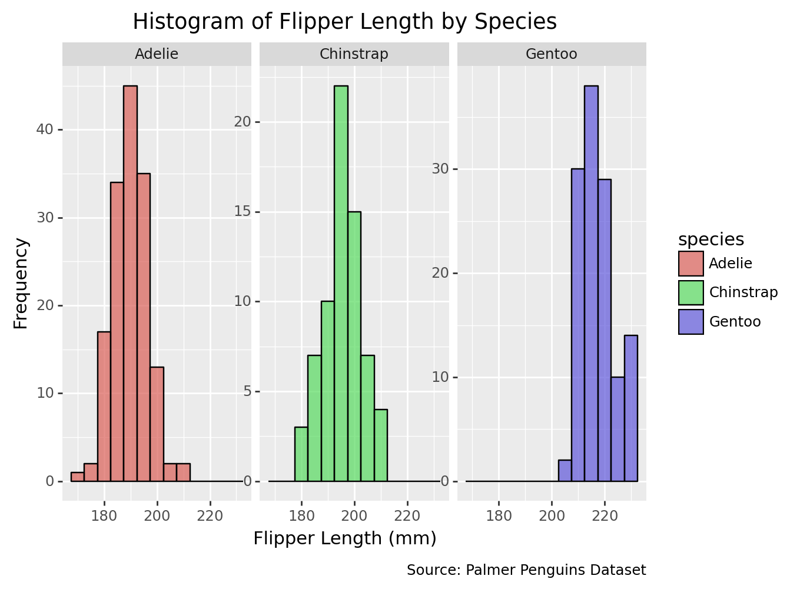
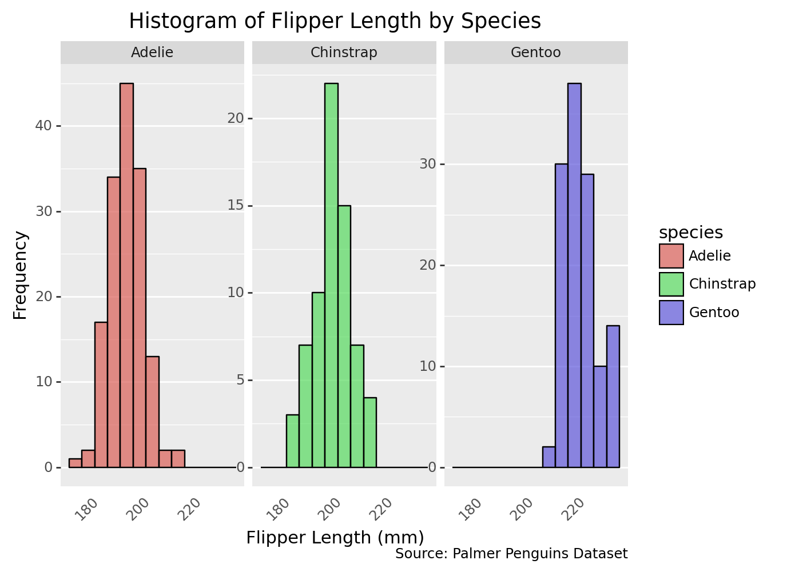
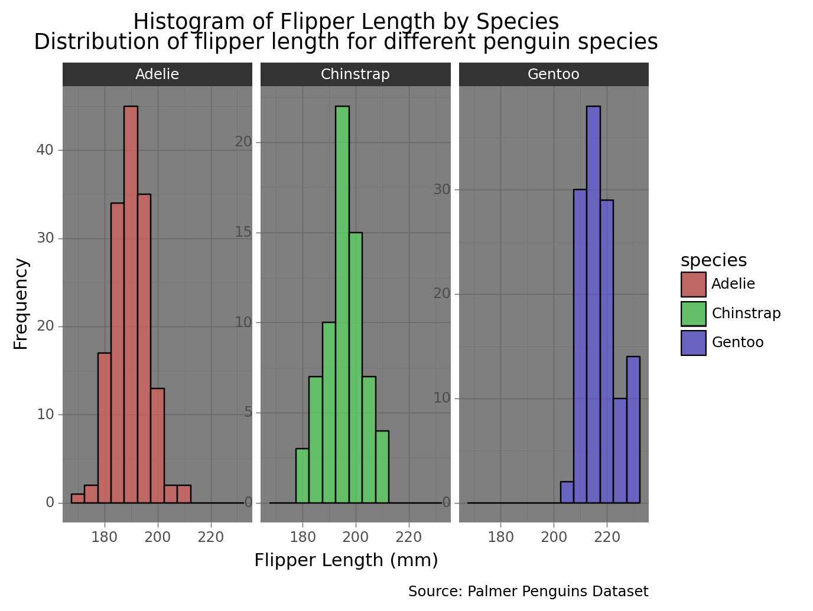

#import sys
#!{sys.executable} -m pip install pandas
#!{sys.executable} -m pip install palmerpenguins
#!{sys.executable} -m pip install plotnine3 Data Visualisation with Grammar of Graphics
- Open jupyter notebook from the command line:
jupyter notebook
Opening a specific notebook
jupyter notebook notebook.ipynb
- Install following packages
- Load packages
import pandas as pd
import plotnine as p9
from palmerpenguins import load_penguins
from plotnine import *- Explore data
penguins = load_penguins()
penguins.head()| species | island | bill_length_mm | bill_depth_mm | flipper_length_mm | body_mass_g | sex | year | |
|---|---|---|---|---|---|---|---|---|
| 0 | Adelie | Torgersen | 39.1 | 18.7 | 181.0 | 3750.0 | male | 2007 |
| 1 | Adelie | Torgersen | 39.5 | 17.4 | 186.0 | 3800.0 | female | 2007 |
| 2 | Adelie | Torgersen | 40.3 | 18.0 | 195.0 | 3250.0 | female | 2007 |
| 3 | Adelie | Torgersen | NaN | NaN | NaN | NaN | NaN | 2007 |
| 4 | Adelie | Torgersen | 36.7 | 19.3 | 193.0 | 3450.0 | female | 2007 |
Data information
penguins.info()<class 'pandas.core.frame.DataFrame'>
RangeIndex: 344 entries, 0 to 343
Data columns (total 8 columns):
# Column Non-Null Count Dtype
--- ------ -------------- -----
0 species 344 non-null object
1 island 344 non-null object
2 bill_length_mm 342 non-null float64
3 bill_depth_mm 342 non-null float64
4 flipper_length_mm 342 non-null float64
5 body_mass_g 342 non-null float64
6 sex 333 non-null object
7 year 344 non-null int64
dtypes: float64(4), int64(1), object(3)
memory usage: 21.6+ KBDescriptive statistics
penguins.describe()| bill_length_mm | bill_depth_mm | flipper_length_mm | body_mass_g | year | |
|---|---|---|---|---|---|
| count | 342.000000 | 342.000000 | 342.000000 | 342.000000 | 344.000000 |
| mean | 43.921930 | 17.151170 | 200.915205 | 4201.754386 | 2008.029070 |
| std | 5.459584 | 1.974793 | 14.061714 | 801.954536 | 0.818356 |
| min | 32.100000 | 13.100000 | 172.000000 | 2700.000000 | 2007.000000 |
| 25% | 39.225000 | 15.600000 | 190.000000 | 3550.000000 | 2007.000000 |
| 50% | 44.450000 | 17.300000 | 197.000000 | 4050.000000 | 2008.000000 |
| 75% | 48.500000 | 18.700000 | 213.000000 | 4750.000000 | 2009.000000 |
| max | 59.600000 | 21.500000 | 231.000000 | 6300.000000 | 2009.000000 |
3.1 Data visualisation with plotnine
- Scatter plot
scatter_plot = (
ggplot(penguins, aes(x='flipper_length_mm', y='body_mass_g', color='species')) +
geom_point() +
labs(title='Flipper Length vs Body Mass')
)
print(scatter_plot)/Library/Frameworks/Python.framework/Versions/3.9/lib/python3.9/site-packages/plotnine/layer.py:411: PlotnineWarning: geom_point : Removed 2 rows containing missing values.
scatter_plot = (
ggplot(penguins, aes(x='flipper_length_mm', y='body_mass_g', color='species')) +
geom_point() +
geom_smooth(method='auto', se=False) + # Add a smooth line without confidence interval
labs(title='Flipper Length vs Body Mass with Smooth Line')
)
print(scatter_plot)/Library/Frameworks/Python.framework/Versions/3.9/lib/python3.9/site-packages/plotnine/layer.py:411: PlotnineWarning: geom_point : Removed 2 rows containing missing values.
3.2 Box plot of flipper length for each species
box_plot = (
ggplot(penguins, aes(x='species', y='flipper_length_mm')) +
geom_boxplot() +
labs(title='Flipper Length by Species')
)
print(box_plot)/Library/Frameworks/Python.framework/Versions/3.9/lib/python3.9/site-packages/plotnine/layer.py:333: PlotnineWarning: stat_boxplot : Removed 2 rows containing non-finite values.
3.3 Bar chart of species counts
bar_chart = (
ggplot(penguins, aes(x='species')) +
geom_bar() +
labs(title='Bar Chart of Species Counts')
)
print(bar_chart)
3.4 Histogram
histogram_flipper = (
ggplot(penguins, aes(x='flipper_length_mm')) +
geom_histogram(binwidth=5, fill='skyblue', color='black', alpha=0.7) +
labs(title='Histogram of Flipper Length')
)
print(histogram_flipper)/Library/Frameworks/Python.framework/Versions/3.9/lib/python3.9/site-packages/plotnine/layer.py:333: PlotnineWarning: stat_bin : Removed 2 rows containing non-finite values.
3.5 Histogram of flipper length by species
histogram_species = (
ggplot(penguins, aes(x='flipper_length_mm', fill='species')) +
geom_histogram(binwidth=5, color='black', alpha=0.7) +
facet_wrap('~species', scales='free_y') +
labs(title='Histogram of Flipper Length by Species')
)
print(histogram_species)/Library/Frameworks/Python.framework/Versions/3.9/lib/python3.9/site-packages/plotnine/layer.py:333: PlotnineWarning: stat_bin : Removed 2 rows containing non-finite values.
/Library/Frameworks/Python.framework/Versions/3.9/lib/python3.9/site-packages/plotnine/facets/facet.py:440: PlotnineWarning: If you need more space for the x-axis tick text use ... + theme(subplots_adjust={'wspace': 0.25}). Choose an appropriate value for 'wspace'.
3.6 Density plot
density_plot_flipper = (
ggplot(penguins, aes(x='flipper_length_mm')) +
geom_density(fill='skyblue', color='black', alpha=0.7) +
labs(title='Density Plot of Flipper Length')
)
print(density_plot_flipper)/Library/Frameworks/Python.framework/Versions/3.9/lib/python3.9/site-packages/plotnine/layer.py:333: PlotnineWarning: stat_density : Removed 2 rows containing non-finite values.
3.7 Histogram of flipper length by species with additional customization
histogram_species_custom1 = (
ggplot(penguins, aes(x='flipper_length_mm', fill='species')) +
geom_histogram(binwidth=5, color='black', alpha=0.7) +
facet_wrap('~species', scales='free_y') +
labs(
title='Histogram of Flipper Length by Species',
x='Flipper Length (mm)', # X-axis title
y='Frequency', # Y-axis title
caption='Source: Palmer Penguins Dataset',
) )
print(histogram_species_custom1)/Library/Frameworks/Python.framework/Versions/3.9/lib/python3.9/site-packages/plotnine/layer.py:333: PlotnineWarning: stat_bin : Removed 2 rows containing non-finite values.
/Library/Frameworks/Python.framework/Versions/3.9/lib/python3.9/site-packages/plotnine/facets/facet.py:440: PlotnineWarning: If you need more space for the x-axis tick text use ... + theme(subplots_adjust={'wspace': 0.25}). Choose an appropriate value for 'wspace'.
3.8 Change themes
histogram_species_custom2 = (
ggplot(penguins, aes(x='flipper_length_mm', fill='species')) +
geom_histogram(binwidth=5, color='black', alpha=0.7) +
facet_wrap('~species', scales='free_y') +
labs(
title='Histogram of Flipper Length by Species',
x='Flipper Length (mm)', # X-axis title
y='Frequency', # Y-axis title
caption='Source: Palmer Penguins Dataset'
) +
theme(
axis_text_x=element_text(angle=45, ha='right'), # Rotate x-axis labels for better readability
axis_ticks_major_x=element_blank(), # Hide major x-axis ticks
axis_ticks_minor_x=element_blank(), # Hide minor x-axis ticks
panel_grid_major_x=element_blank(), # Hide major x-grid lines
panel_grid_minor_x=element_blank(), # Hide minor x-grid lines
)
)
print(histogram_species_custom2)/Library/Frameworks/Python.framework/Versions/3.9/lib/python3.9/site-packages/plotnine/layer.py:333: PlotnineWarning: stat_bin : Removed 2 rows containing non-finite values./Library/Frameworks/Python.framework/Versions/3.9/lib/python3.9/site-packages/plotnine/facets/facet.py:440: PlotnineWarning: If you need more space for the x-axis tick text use ... + theme(subplots_adjust={'wspace': 0.25}). Choose an appropriate value for 'wspace'.
3.9 Histogram of flipper length by species with dark theme
histogram_species_dark = (
ggplot(penguins, aes(x='flipper_length_mm', fill='species')) +
geom_histogram(binwidth=5, color='black', alpha=0.7) +
facet_wrap('~species', scales='free_y') +
ggtitle('Histogram of Flipper Length by Species\nDistribution of flipper length for different penguin species') +
labs(
x='Flipper Length (mm)', # X-axis title
y='Frequency', # Y-axis title
caption='Source: Palmer Penguins Dataset',
) +
theme_dark() # Apply dark theme
)
print(histogram_species_dark)/Library/Frameworks/Python.framework/Versions/3.9/lib/python3.9/site-packages/plotnine/layer.py:333: PlotnineWarning: stat_bin : Removed 2 rows containing non-finite values.
/Library/Frameworks/Python.framework/Versions/3.9/lib/python3.9/site-packages/plotnine/facets/facet.py:440: PlotnineWarning: If you need more space for the x-axis tick text use ... + theme(subplots_adjust={'wspace': 0.25}). Choose an appropriate value for 'wspace'.